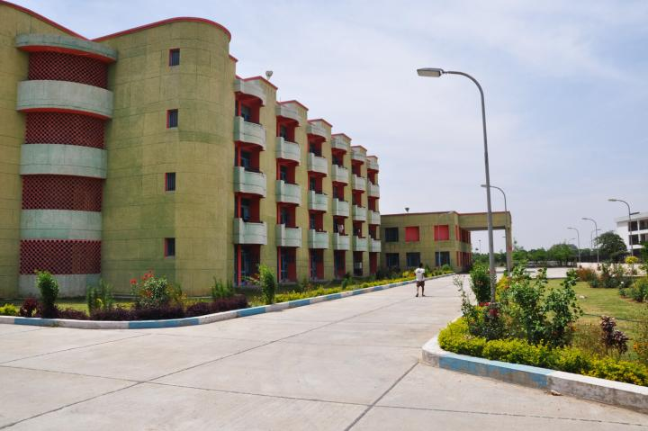
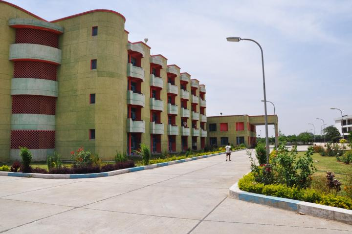

NIT Kurukshetra awards undergraduate B.Tech. in various engineering fields in a four-year programme.
It offers postgraduate (PG) M.Tech. degrees in similar engineering fields as well as Physics.
The M.Tech. degree is awarded after four semesters (two years) or two semesters for relevant PG diploma
holders.
Ph.D. research programmes are offered in engineering, sciences, humanities and social sciences as well as
computer applications.
National Institute of Technology Kurukshetra (NITKKR) is a public technical and research university located
in Kurukshetra.
In December 2008, it was accredited with the status of Institute of National Importance (INI).
It is one of the 30 National Institutes of Technology established and administered by Government
ofIndia.
It runs undergraduate and postgraduate in programme Engineering and Doctor of Philosophy programme in
Engineering, Sciences and Humanities.
The first Prime Minister of independent India, Jawaharlal Nehru, sought to develop India as a leader in
science and technology.
Between 1959 and 1965, with this vision, the Government founded 14 educational institutions in
different regions of India.
The system of competitive entry (based on merit) gave access to higher education in these institutions.
Such an institution was established in 1963 in Kurukshetra as a joint enterprise of the Government of
India and the Government of Punjab,
India as the Regional Engineering College, Kurukshetra (REC Kurukshetra).
In 2002, all the Regional Engineering Colleges were unified by a common entrance exam. Therefore, 4
REC Kurukshetra was renamed to National Institute of Technology under the NIT Act and was given a Deemed
University status.


 
